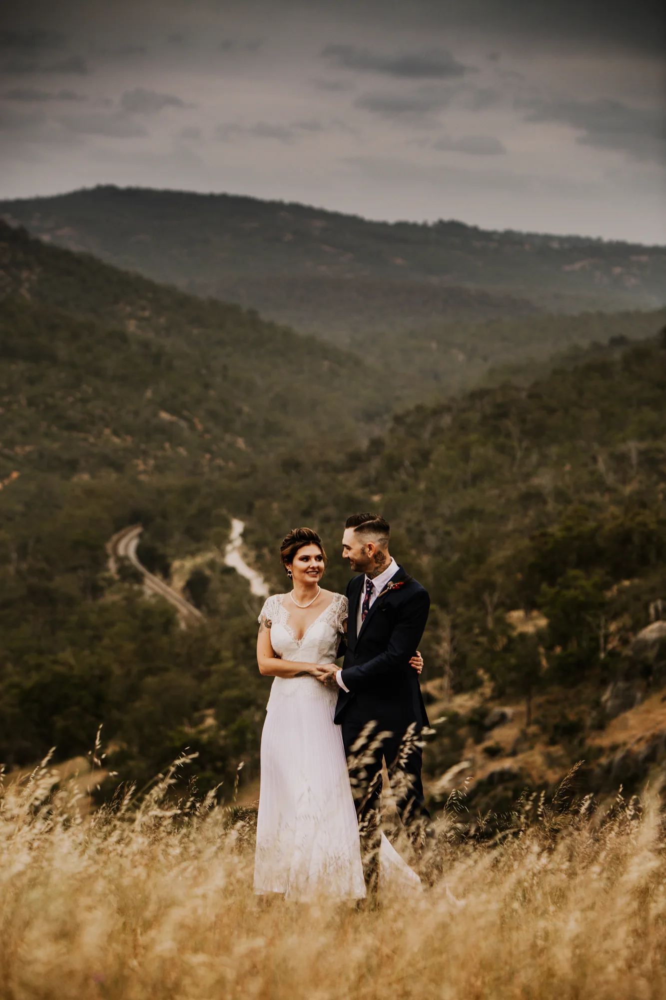
Perth Hills · Whadjuk Noongar Boodjar
Anderson Point
elopement photographer
Anderson Point is a stunning, secluded event venue for small, intimate ceremonies and elopements for up to 30 guests in the Perth Hills, on Whadjuk Noongar Boodjar.
Thirty guests changes how a day is photographed. There's no crowd to work around, so we can stay close and quiet — and the pictures end up feeling like the day actually felt.
The valley behind the ceremony space is the reason to book here. We photographed Jamie & Anthony small against all of it, then walked them back into the long grass as the light dropped.
The outlook has a name: Walyunga National Park. That is what sits behind your ceremony — not a landscaped garden but actual protected bushland, which is why the wide frames from here do not look like anywhere else we shoot.
Anderson Point is at Brigadoon, on the Perth Hills side of the Swan Valley. It is exclusive-use and they deliberately take limited bookings, so there is no second wedding turning over behind you and no coordinator hurrying you along.
There is a package built for ten guests or fewer, which makes it one of the few genuinely good elopement options this close to Perth. An elopement is not a shorter wedding, it is a different one: fewer people to organise means we can spend the time on you rather than on group photos, and the day tends to run on feel rather than a schedule.
A real wedding here
Jamie & Anthony
Anderson Point, Perth Hills

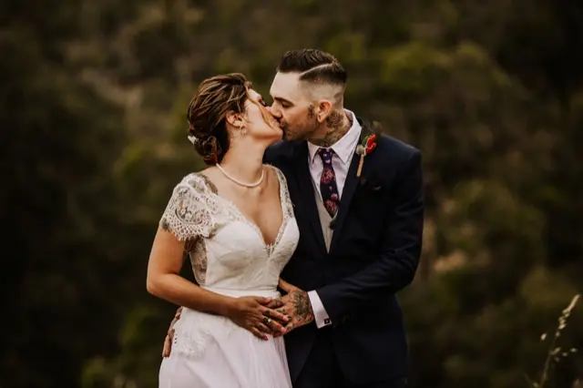
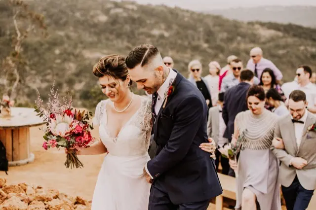
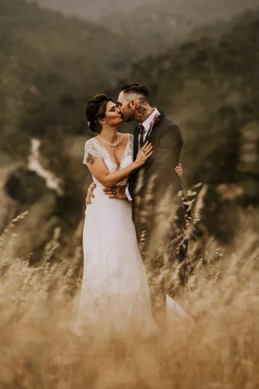
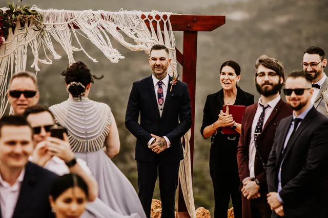
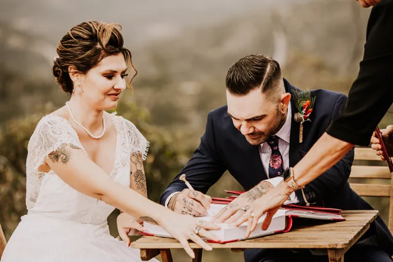
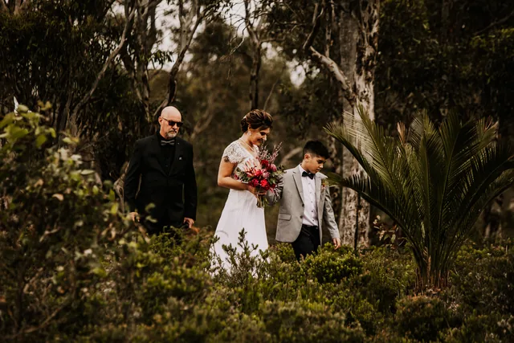
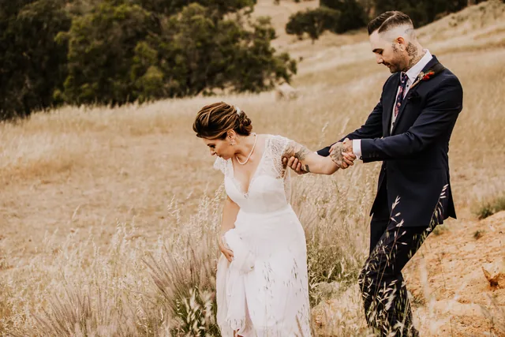
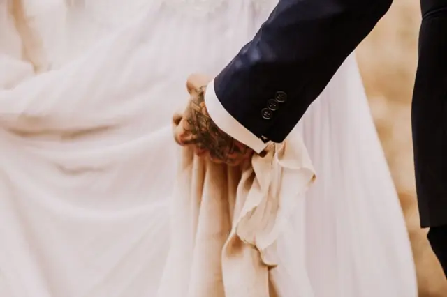
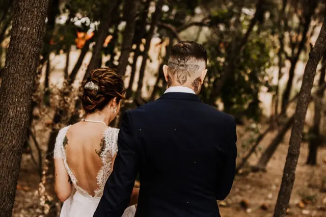
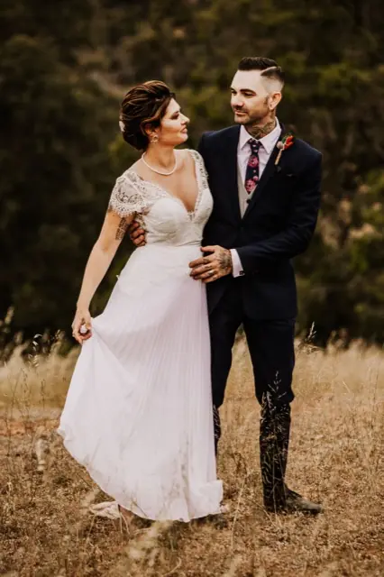
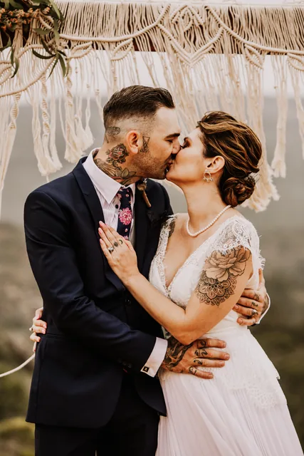
Getting married here?
We already know
the light
We've photographed at Anderson Point and we shoot across the Perth Hills, Swan Valley and the coast every season. That means we're not working out your venue on the day — we're working out your family.
Eight photographers on the team means your date is rarely a problem, and there's always someone ready if plans change.
He captured our moments perfectly and all we had to do was enjoy our day! Would highly recommend Jesse.Nikki Moore
Good to know
Anderson Point
questions we get asked
How many guests can Anderson Point have?
Where exactly is Anderson Point?
Is Anderson Point good for an elopement?
How long do we need a photographer for a thirty-guest wedding?

Let's check your date
Tell us when you're getting married at Anderson Point. We'll come back within 24 hours.